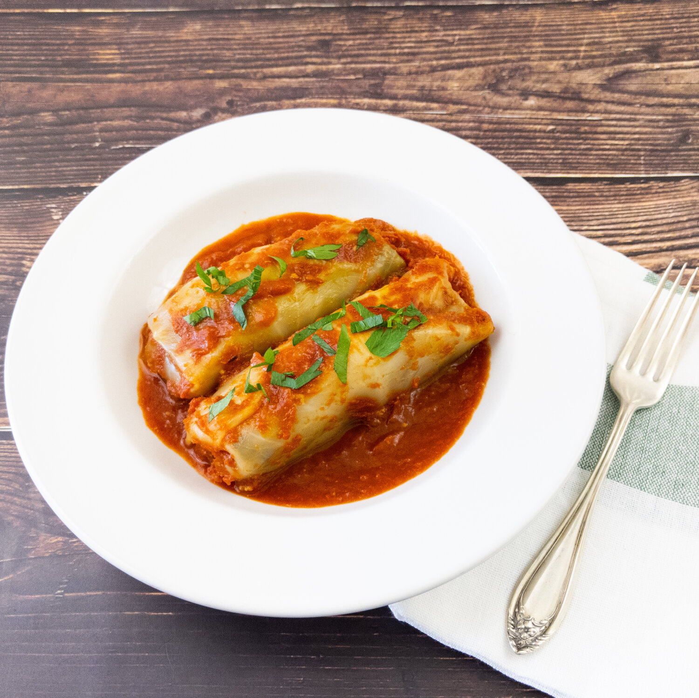

Back to Index
Buttons in a Blanket
A recipe created by Lemon Drop from A Receipe Reborn

Button mushrooms wrapped in parboiled cabbage and stewed in a savory soup tomato soup.
Ingredients
Zesty Tomato Sauce:
Garlic, sliced - 4 cloves
Lemon zest, sliced thin - 1 tbsp
Crushed tomatoes - 3 cups
Unsalted vegtable broth - 3 cups
Steps:
1.) In a large wide pan set over medium heat, cook the garlic in the olive oil until it starts turning brown, around 3 minutes.
2.) Add the lemon zest and continue cooking until it starts turning brown, around 2 minutes.
3.) Add the tomatoes, broth and salt and stir to combine.
4.) Bring the sauce to a boil, then set the heat to low and let it simmer until you are ready to roll the cabbage leaves.
Cabbage Rolls:
Dry long grain rice - 1 cup
Olive oil, divided - 2 tbsp
Mushrooms, finely chopped - 1.5 lbs
Onion, finely chopped - 1 Onion
Selery, finely chopped - 2 Stalks
Carrot, finely chopped - 1 Carrot
Roma tomato, diced small - 2 Tomatoes
Green pepper, diced small - 1 Pepper
Ground black pepper - 1 tbsp
1.) Rinse and cook the rice according to the package instructions and set it aside. Alternatively, use leftover cooked rice.
2.) Crush the saffron, add 1 tbsp/15 mL of hot water and let it steep for 5 minutes.
3.) In a large wide pan, cook the mushrooms in 1 tbsp/15 mL of olive oil over medium high heat until all the liquid is evaporated, around 10 minutes.
4.) Transfer the cooked mushrooms to a large bowl.
5.) In the same large wide pan, cook the onions, celery, carrot in 1 tbsp/15 mL of olive oil over medium high heat until they are soft and all the liquid is evaporated, around 10 minutes.
6.) Add the vegetable mixture to the mushrooms.
7.) Add the cooked rice, tomato, green pepper, parsley, salt, black pepper, saffron plus liquid and stir to combine.
8.) Blanche the cabbages one at a time in salted boiling water for 2 minutes to loosen the leaves.
9.) Further blanche the leaves as necessary to soften the edges enough to fold without breaking, up to 5 minutes.
10.) Place an egg sized amount of filling onto one cabbage leaf and roll the leaf upward to cover the filling.
11.) Fold the sides toward the middle and then roll upward to seal it.
12.) Repeat steps 10 and 11 until all the leaves and filling are used.
13.) Preheat the oven to 350°F/175°C.
14.) Prepare a large deep baking pan by ladling in enough sauce to completely cover the bottom.
15.) Place the cabbage rolls in the pan and cover them with more sauce.
16.) Bake the cabbage rolls for 30 minutes, rotate the pan and bake for another 30 minutes.
Back to Index